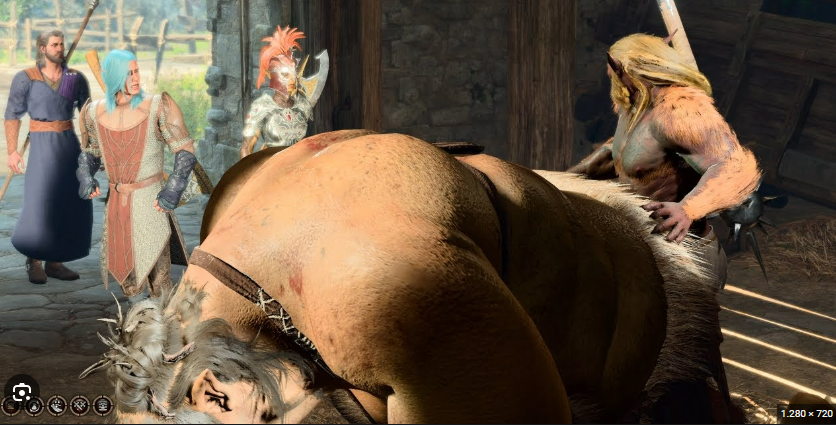

Ist es sinnvoll, Zeit mit Videospielen zu verbringen? Oder verschwendet man seine Zeit mit Gaming? Mit dieser Frage setzen sich Medien und Forschende an Universitäten immer wieder auseinander. Die Fronten scheinen verhärtet. Gamer fühlen sich angegriffen. Was denkt ihr so darüber? Würde mich interessieren 🙂 . LG RS.
Wenn es einen Spaß macht? Why not. Ich denke schon, dass ein klassisches Jump' n Run ala Super Mario die Geschicklichkeit sehr fördern kann. 😃
Ich denke halt auch, dass Gamen die Kreativität fördert. Wenn man so Minecraft spielt oder Strategiespiele. Heute aber wieder das gelesen:
Ich meine, da ist man doch selber Schuld, oder. Ein Kommentar drunter, hat mich ser verwundert:
Ist doch heftig, oder?
LG RS.
Ja das halt leider das Problem dass solche Praktiken der Spielhersteller schwarze Schafe sind 😞
Die Aussage finde ich schon heftig und nicht passend. Das sag ich ja über einen Angler oder was auch immer auch nicht. Jeder Mensch hat halt andere Interessen.
Das liegt meiner Meinung nach daran, welche Spiele man spielt. Im Google PlayStore gibt es auch eine eigene Kategorie mit dem Namen "Spiele für zwischendurch" oder so.
Aber wie ihr schon gesagt habt: Strategiespiele oder Kreativ-Modis wie Minecraft sind sicher nicht reiner Zeitvertreib.
Sicher wird jemand, der absolut keinen Bezug zu Games hat oder damit nichts anfangen kann, sagen, dass es sinnvoller wäre, (mehr) Sport zu machen oder das letzte Staubkorn in der Ecke vom Keller zu beseitigen.
Im Krone-Forum braucht man sich über solche Kommentare nicht wundern. 😉 Früher war man halt der Meinung, dass man "kindisch" ist, wenn man als Erwachsener noch spielt. Heute weiß man, dass Spielen die Kreativität fördert und auch nicht das schlechteste Braintraining ist 😉 Loot-Boxen wie - nicht nur - bei FIFA sind aber natürlich ein Unding, nur: Spieler, die hier Geld ausgeben um sich Vorteile zu verschaffen, sind im Grunde selber schuld. Ich für meinen Teil steh halt dazu, dass ich kein superguter Spieler bin, und ich brauche auch nicht diese schön golden glänzende Rüstung oder jenes Goodie, für das man aber das Börserl zücken muss 😉
Umso schöner ist es dann, wenn z.B. mit Baldurs Gate 3 ein Spiel auf den Markt kommt, dass man einfach nur sehr lange spielen kann, ohne zusätzlich in die Tasche greifen zu müssen 🙂
Baldurs Gate 3 und kindisch passen da mal gar nicht zusammen 😂 .

So viel dazu. Hahaha.
LG RS.